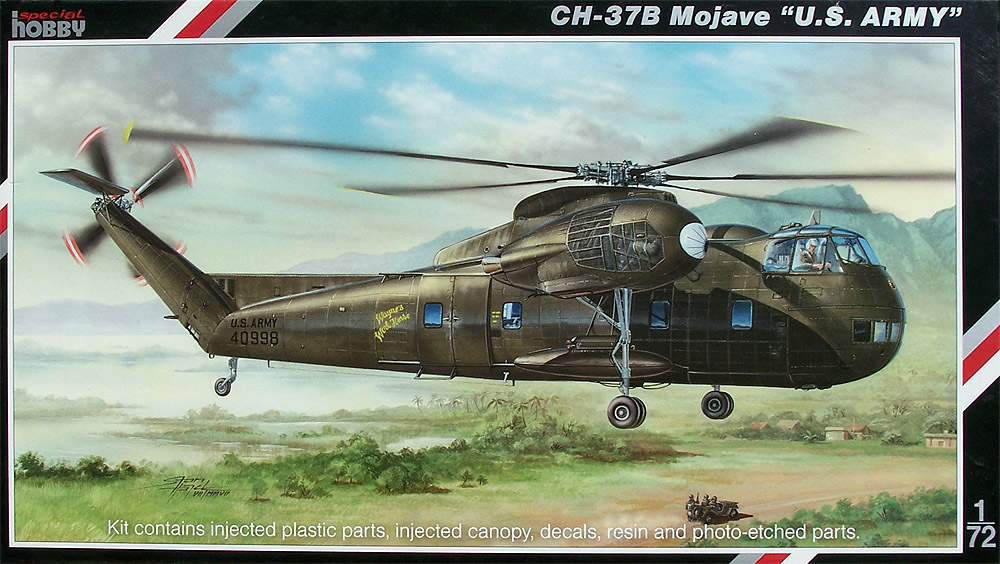
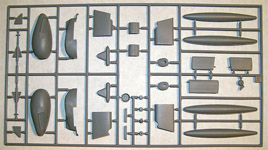
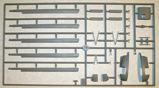
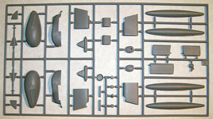
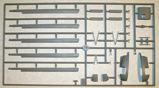
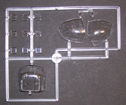
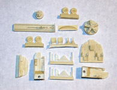
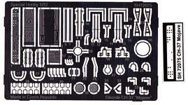
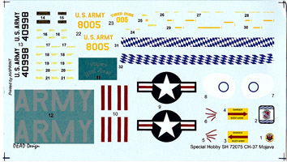

|
Special Hobby 1/72 CH-37B Mojave

Kit #72075
MSRP $54.00 $48.60 from Squadron Mail Order
Images and text Copyright © 2012 by Matt Swan
Developmental Background
Sikorsky helicopters usually get American Indian names when entering into U.S. Military Service and the CH-37B got tagged as Mojave. This heavy lifting helicopter holds a couple of specific landmark items for rotary aircraft; number one is that is the last heavy lifter built using piston engines and was, at the time of its service use, the largest heavy lifting helicopter in existence. These two points ensure it a place in the history books and also weighed heavily in influencing its short service life as newer turbine driven aircraft like the Sky Crane quickly made it obsolete.
The S-56 was first developed by Sikorsky in 1953 and was brought into active service in 1956 with the Marine Corps. Not long after this introduction it received some design changes to enhance its load/unload ability and entered service with the U.S. Army as the CH-37B Mojave. It could lift and hover with 26 fully equipped troops or three Might Mite light weight jeeps. It featured twin Pratt and Whitney R-2800 Double Wasp engines; one mounted to each side of the fuselage which also housed the retractable main landing gear, and could survive having at least one of its five main rotor blades being shot off during flight. By the late 1960s the type was retired being replaced with the CH-54 but not before approximately 154 examples had been constructed and delivered plus having the distinction of recovering some seven and a half million dollars in U.S. equipment from behind enemy lines.
The Kit
Special Hobby released this kit in late 2007 in the Czech Republic and it quickly made its way into the U.S. by the next year. The kit is a very nice collection of plastic injection molding, resin casting and photo etch details. We get three sprues of light grey plastic that is fairly typical of the current quality expectations of short run kits coming out of Europe. The plastic is somewhat thick and a little on the soft side but the surface detail is very nice with finely engraved panel lines and well defined surface details. The first sprue consists of the fuselage body. Like most of these short run kits there are no alignment pins so care must be taken getting everything lined up during construction. The next two sprues contain all your larger fuselage parts and rotor parts. The Mojave engines have some large screened areas for cooling and this is represented with simple grids as surface texture cast into plastic parts. With a good coat of black wash these will most likely look okay but the real thing had lots of engine detail very visible through these grids, just something the modeler might want to think about. The rotor blades are cast flat and it becomes the modeler's responsibility to induce the correct droop to the rotor blades however the instructions do give some tips on bending them to achieve this. The blades can only be assembled in the flight position, there is no option for building them stowed.
The kit comes with a nice package of resin detail parts and the entire cockpit are is comprised of resin and photo etched parts so even at this scale it is very possible to achieve some spectacular results and with all the clear glazing around the flight deck you can even see some of it when completed. The main rotor head is also part of the resin package, something that benefits greatly from the level of detail obtainable with resin casting. We get an acetate instrument sheet with a photo etched overlay and a nice PE center console piece. Beyond the flight deck there is no interior detail whatsoever which is somewhat disappointing. I have not actually checked yet but would assume one can see some area of the interior via the many small windows in the sides and lower nose. The clear parts are fair with raised frame lines although the frame line definition seems slightly soft and mushy. Clarity is fair and will probably improve with a treatment of Future Floor Polish. The PE fret includes wiper blades and some additional frame detail. We also get a nice selection of little PE detail parts for the rotor head, the landing gear and around the exterior of the model so with some patience and care the kit promises to build into a pretty nice looking representation of the real thing.
 



You may click on these small images to view larger pictures



Decals and Instructions
The kit instructions come as a half sheet sized booklet of 14 pages. It opens with a nice history of the type in both English and Czech. We get a complete parts map and color chart that include Gunze-Sangyo paint codes. There are plenty of exploded view assembly steps with color call-outs and images illustrating overall parts relationships (like rotor blade droop). You can see the instructions here as a pdf file.

The kit decals provide markings for three U.S. Army aircraft. They include a nice selection of service stencils and warning labels and the classic eyeball markings for the engine nacelles. The scan you see here has been modified to enhance the white markings to aid in viewing them. Overall print registry and color density looks good. While I have not yet had a chance to use any of these decals I do not expect any trouble with standard setting solutions.
Conclusions
Plastic pieces are well done with good surface texture, the resin is very good looking and well cast, the selection of PE details in this scale is better than average and instructions are comprehensive. Straight from the box I expect this will build up very well with little difficulty however there are a few places the modeler can improve on the base offering.
There are two specific areas that I can see enhancing; the engine nacelles and the cargo bay interior. I believe that Special Hobby has done the best they can with a kit for the average modeler in reference to the engine nacelles however the large cooling screens could be replaced with Verlinden or Extratech wire mesh. This would give a better exterior look but would then require the modeler do something to replicate the slant mounted radial engines. I would most likely recommend the Eduard Brassin #672001 R-2800-10 engines as they include a good exhaust manifold which is the most visible item here. They would not be direct drop-in parts but with some modification would really punch up the detail level. There are several other and less expensive 1/72 R-2800 engine options out there but all would require even more modification to work here. Inside the fuselage I would like to see more detail which would allow the modeler to open the nose cargo doors. At this time that would all be scratch built work but we can hope that some enterprising aftermarket company would offer something in the future.
Overall I am impressed with the level of detail provided in a kit of this scale. It appears that Special Hobby has invested a considerable amount of time and effort into making a real jewel of a model kit here, now the responsibility of making it shine falls on the modeler. Whether you plane to build straight from the box or succumb to AMS and modify the crap out of this kit I would strongly recommend this to any helicopter aficionado. Now would someone please make one in 1/48?
|


{kind=link}
{kind=link}
{kind=link}
{kind=link}
{kind=link}
{kind=link}
{kind=link}